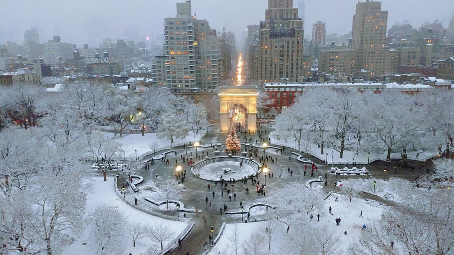

Travel
Chiangmai, Thailand


chiangmaigif.gif
chiangmai.jpeg
Geographical Location: Asia
Paragraph One about the location: Chiang Mai, nestled in the lush hills of northern Thailand, is a city that captivates with its unique blend of cultural richness and natural beauty. Situated approximately 700 kilometers north of Bangkok, Chiang Mai is the largest city in the region and serves as the capital of the province of the same name. Its geographical location is nothing short of enchanting, surrounded by forested mountains and picturesque landscapes. This charming city, often referred to as the "Rose of the North," offers visitors a delightful escape from the bustling urban life, inviting them to explore a realm where tradition meets modernity amidst a backdrop of stunning scenery.
Paragraph Two about the location: The heart of Chiang Mai beats with a rich history that dates back over 700 years. Founded in 1296, the city was originally the capital of the ancient Lanna Kingdom. Today, remnants of its storied past are scattered throughout the city, from the ancient temples that dot the landscape to the preserved city walls and moats that harken back to a bygone era. Among the city's treasures is the revered Wat Phra Singh, a 14th-century temple known for its intricate architecture and revered Buddha image. Chiang Mai's historical sites provide a captivating glimpse into its heritage, making it a destination that seamlessly weaves together the past and present for visitors to explore and appreciate.
Photo Gallery

chiangmai1.jpeg
colorful hot balloons in the heart of Chiang Mai
You can see hot balloons in Chiang Mai as well.

chiangmai2.jpeg
several elephants and smiley volunteers in the forest
You can see cute elephants in Chiang Mai! Isn't that fun?!

chiangmai3.jpeg
ancient temple of Chiang Mai
There are so many beautiful temples in Chiang Mai.

chiangmai4.jpeg
several monks walk by the street
Be respectful to the monks.

chiangmai5.jpeg
several delicious dishes from Chiang Mai
And don't forget to treat yourself with delicious Thai food!
Alexandru Ursu
Monteverde, Costa Rica

Monteverde.gif
monteverde.jpg
Geographical Location: South America
Monteverde, Costa Rica is situated 4,662 feet above sea level. Monteverde's famed cloud forests are the byproduct of fog (a thick, low-hanging cloud) tangling amongst the leaves and branches of the forest canopy. Trails and hanging bridges offer a close-up view of the diverse variety of animals and plants living in the forest.
One of the main tourist locations in Monteverde is the town of Santa Elena, which is not only home to a variety of restaurants with delicious food, but a serpentarium as well. You can enjoy hiking, ziplining, and observing the native wildlife while staying in Monteverde. It's a truly beautiful place.
Photo Gallery

Monteverde_cloud_forest.jpeg
Clouds rolling through a line of trees.
You can hike trails and zipline through the Monteverde cloud forests.

Monteverde_hanging_bridges.jpeg
An image of a bridge hanging above the cloud forest canopy in Monteverde.
Hanging bridges over the cloud forests allow for a birds-eye view.

Monteverde_hummingbirds.jpeg
A hummingbird with green feathers drinking from a pink and orange flower.
You can visit hummingbirds at Monteverde’s Selvatura Park’s hummingbird garden, which exhibits over 14 different species of hummingbird.

Monteverde_el_tigre_waterfalls.jpeg
A person in red standing in front of one of El Tigre’s four waterfalls.
El Tigre Waterfalls is made up of four falls, which are connected by trails and hanging bridges.

Monteverde_skyline.jpeg
Picture of the pretty skyline
Wouldn't it be great to have such a view/area closer to home??
Alexandru Ursu
New York


NYC.gif
NYC_Empire_State.jpeg
Geographical Location: NYC, NY, United States, North America
New York City thrives as a vibrant tapestry of cultures, languages, and experiences. Its streets pulse with energy, reflecting the city's boundless diversity. From the rhythmic beats of street performers in Times Square to the aroma of diverse cuisines wafting through neighborhoods, NYC's lively atmosphere encapsulates a living, breathing microcosm of the world.
From the iconic skyline to the bustling streets, it's a place where dreams are both pursued and realized. The city's fast-paced lifestyle is balanced by its diverse communities, offering a unique blend of cultures, cuisines, and experiences around every corner. Amid the hustle and bustle, there's a sense of constant motion and an electrifying energy that makes life in the Big Apple truly extraordinary.
Photo Gallery
washington-square-winter.jpg
A beautiful scenic photo of washignton square covered in snow
Winter in Washington Square Park brings another view of NYC

Times_Square.jpg
Picture of some skyscrapers in the heart of downtown NYC
Time square is crowded with people from all over the world, and its aliveness flows in the lights and shadows of the city.
yellow_cab.jpg
Old version of NYC cabs
The Yellow cab takes you through the heart of NYC

Brooklyn_Bridge.jpg
The empty Brooklyn Bridge with a nice sunset/skyline in the back
Brooklyn Bridge is one of the landmarks of NYC and a good place for a night walk.

bibble-sip.jpg
A variety of delicious looking desserts
My favorite cream puff place in NYC: Bibble & Sip
Alexandru Ursu